Lời nói đầu & Triết lý Huấn luyện Nhà Vô địch
📖 Lời nói đầu từ Nick Bollettieri
Tôi tạo nên công trình đồ sộ này với một mục đích duy nhất: chia sẻ toàn bộ tinh hoa kinh nghiệm đúc kết qua hơn 44 năm sự nghiệp huấn luyện đỉnh cao. Cuốn sách này sẽ mô tả cặn kẽ triết lý đào tạo của tôi dành cho mọi cấp độ người chơi, từ những người mới chập chững cầm vợt cho đến các đấu thủ vươn lên vị trí số 1 thế giới.
Tôi sẽ kể cho các bạn nghe những câu chuyện chân thực nhất phía sau hậu trường về những nhà vô địch mà tôi từng trực tiếp tôi luyện: Andre Agassi, Jim Courier, Monica Seles, Pete Sampras, Boris Becker, Marcelo Rios, Martina Hingis, Tommy Haas, Venus và Serena Williams. Tôi sẽ lột tả sức mạnh phi thường, những cá tính kỳ dị, nỗi sợ hãi thầm kín cùng những hành vi hoang tưởng của họ khi đối mặt với áp lực tột độ.
Cuốn sách này bao quát một phạm vi kiến thức khổng lồ: từ rèn luyện thể lực, dinh dưỡng, tâm lý học, phương pháp đồng hành của phụ huynh, cho đến cấu tạo vi mô và độ căng của từng sợi dây vợt. Tôi không khẳng định rằng mọi điều tôi làm đều luôn đúng tuyệt đối, và tôi không bao giờ phán xét những huấn luyện viên có phương pháp khác biệt là sai lầm. Những điều được viết nơi đây sinh ra từ thực tiễn trên sân đấu qua hơn bốn thập kỷ.
Quần vợt đã trải qua một cuộc lột xác toàn diện về tốc độ và sức mạnh. Là một huấn luyện viên, nếu tôi không chủ động thích ứng và tiên phong đổi mới, các học trò của tôi sẽ lập tức trở thành nạn nhân của sự tiến hóa về trang thiết bị, chiến thuật và thể lực. Nhưng xét cho cùng, sự chăm chỉ, lòng tận tụy và tinh thần dũng cảm dám nhận trách nhiệm trước thất bại sẽ luôn là nền tảng bất biến của một nhà vô địch đích thực.
⭐ Tuyên ngôn: Vận Động Viên Hoàn Hảo của Tôi (My Perfect Athlete)
Vận động viên hoàn hảo của tôi sẽ chiến thắng nhiều hơn là thất bại rất nhiều lần. Không một ai có thể chiến thắng mãi mãi — kể cả Michael Jordan, Muhammad Ali hay Roger Clemens. Nhưng vận động viên của tôi hiếm khi để thua cuộc, bởi vì họ thi đấu với một tinh thần kiên quyết: chiến đấu để giành chiến thắng!
Khi vận động viên hoàn hảo của tôi giành chiến thắng, họ sẽ chiến thắng một cách công bằng, đĩnh đạc và khiêm nhường; tuân thủ nghiêm ngặt cả những luật lệ thành văn lẫn những quy ước danh dự bất thành văn; không bao giờ khiêu khích, trêu ngươi hay hạ nhục đối thủ.
Khi thất bại, vận động viên hoàn hảo của tôi sẽ đón nhận trận thua với sự tôn nghiêm tương tự: họ thua vì đối thủ thi đấu xuất sắc hơn chứ tuyệt đối không bao giờ thua vì bản thân thiếu nỗ lực hay buông xuôi. Họ sẽ tiến lại chân thành chúc mừng đối phương mà không bao giờ tìm kiếm bất kỳ lý do hay lời bào chữa ngụy biện nào. Họ sẽ âm thầm thề với chính mình rằng sẽ lao vào tập luyện chăm chỉ hơn nữa để đảo ngược kết quả vào lần tái đấu tiếp theo.
Vận động viên hoàn hảo của tôi sẽ luôn khao khát học hỏi để chạm tới sự hoàn thiện; biết quan sát và lắng nghe những lời chỉ dẫn quý giá. Họ sẽ yêu tha thiết môn thể thao này, tôn trọng lịch sử và những nét tinh tế của nó, trở thành niềm tự hào của gia đình và bạn bè chứ không bao giờ là nỗi hổ thẹn.
Vận động viên hoàn hảo của tôi luôn khắc ghi trong tim cách cư xử của một nhà vô địch chân chính, và hành động như một nhà vô địch thực thụ cả trong lẫn ngoài sân đấu.
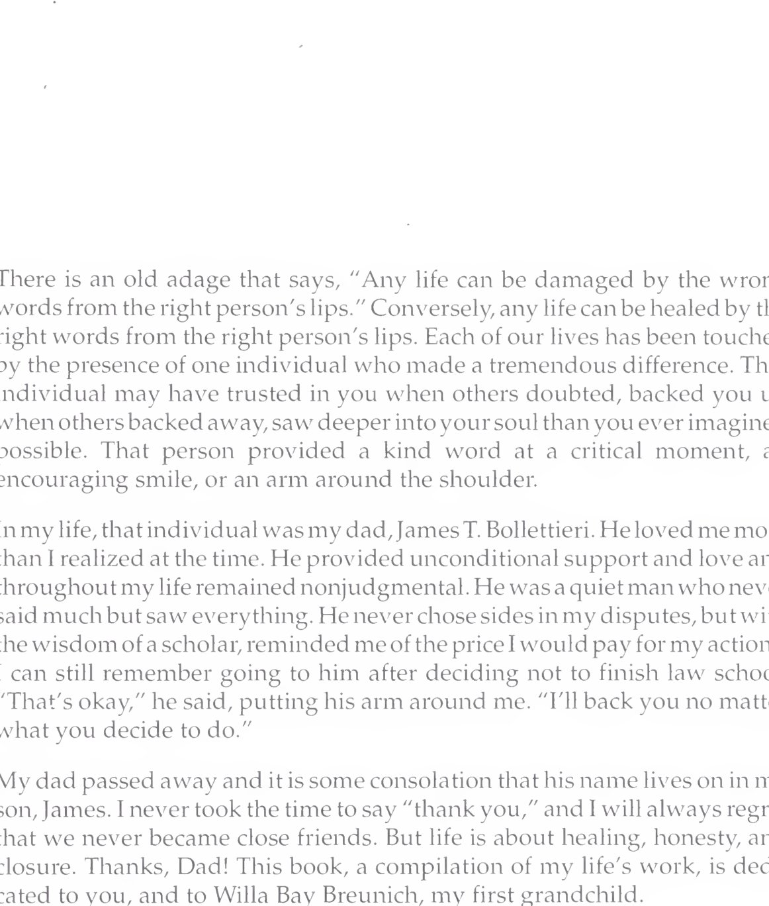
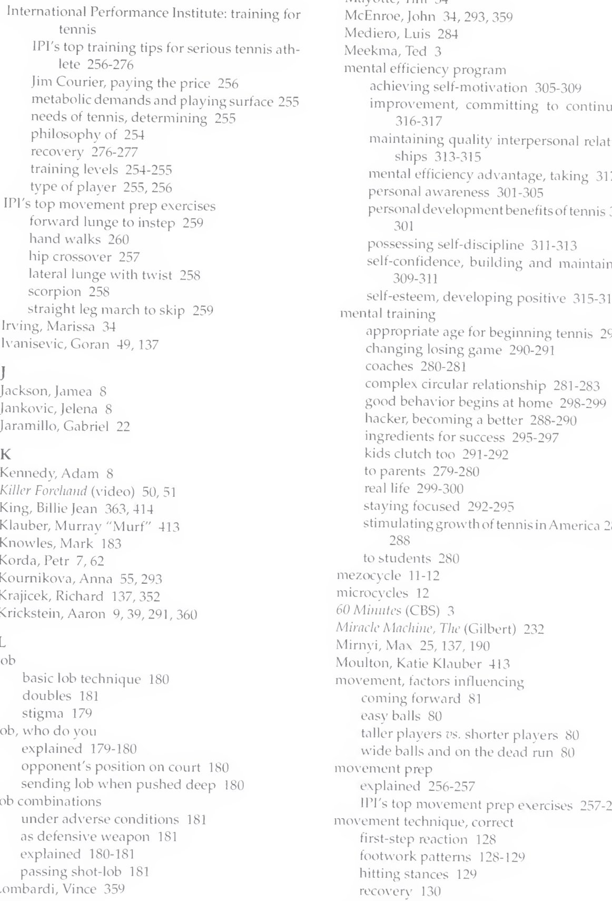
Chương 1: Hệ thống phát triển tài năng Bollettieri (The Bollettieri Development System)
1. Triết lý nền tảng: 'Huấn luyện con người, không chỉ dạy kỹ năng'
Triết lý tối thượng của Học viện Bollettieri là huấn luyện con người toàn diện chứ không chỉ dừng lại ở việc mài giũa các kỹ năng quần vợt đơn thuần. Sứ mệnh của chúng tôi không chỉ là tạo ra những tay vợt xuất sắc hơn trên bảng xếp hạng, mà là giúp các học viên trưởng thành vững vàng trong mọi nẻo đường của cuộc sống.
Ngay từ những ngày đầu khởi nghiệp, tôi đã nhận ra một chân lý sâu sắc: Nếu tôi làm việc bền bỉ hơn, chăm chỉ hơn bất kỳ ai khác và vây quanh mình bằng những cộng sự trung thành, tận tụy, tôi có thể tạo nên những điều kỳ diệu. Vào thập niên 1950 và đầu 1960, người ta chỉ cần cầm một hộp bóng ra công viên công cộng là có thể bắt đầu dạy học. Nhưng để tạo nên những nhà vô địch Grand Slam, bạn cần một hệ sinh thái kỷ luật thép, nơi sự cạnh tranh khốc liệt diễn ra từng giây từng phút.
Tại học viện Bradenton (sau này là IMG Academy), chúng tôi đã tiên phong xây dựng mô hình học viện quần vợt nội trú toàn thời gian đầu tiên trên thế giới. Nơi đây, các thiếu niên từ khắp năm châu cùng sinh sống, rèn luyện thể lực, học văn hóa và thi đấu cọ xát với nhau mỗi ngày. Sự cọ xát liên tục ở cường độ cao nhất chính là chiếc lò luyện kim biến những tài năng thô ráp thành những viên kim cương lấp lánh.
2. Phân biệt sống còn: Huấn luyện viên (Coach) và Người hướng dẫn (Instructor)
Một trong những nguyên nhân khiến hàng ngàn tài năng trẻ bị chôn vùi là việc nhầm lẫn tai hại giữa một Người hướng dẫn kỹ thuật (Instructor) và một Huấn luyện viên chiến lược đích thực (Coach).
Một người hướng dẫn (Instructor) đóng vai trò quan trọng trong việc giảng dạy các quy chuẩn động tác cơ bản: cách đặt chân, cách mở vợt, cách vung tay theo sách giáo khoa. Tuy nhiên, người hướng dẫn thường chỉ nhìn vào cơ chế động tác bên ngoài mà không thấu cảm được thế giới nội tâm bên trong của vận động viên.
Ngược lại, một Huấn luyện viên đích thực (Coach) phát triển sự thấu hiểu sâu sắc về nhân cách, tính khí, nỗi sợ hãi thầm kín và những sắc thái tâm lý vi tế của học trò. Huấn luyện viên biết khi nào cần thúc ép bằng kỷ luật thép, khi nào cần ôm lấy học trò để động viên; biết cách truyền ngọn lửa tự tin vào huyết quản của một đấu thủ đang tuyệt vọng. Con đường bước lên đỉnh cao thế giới rải đầy xác của những tài năng kiệt xuất đã lạc lối chỉ vì họ bước đi mà không có một huấn luyện viên thực thụ bên cạnh.
3. Tam giác vàng: Vận động viên - Huấn luyện viên - Phụ huynh
Mối quan hệ giữa Huấn luyện viên, Vận động viên và Phụ huynh là chiếc kiềng ba chân quyết định sự thành bại của một sự nghiệp thể thao. Nếu một trong ba chân bị lung lay hoặc xung đột, toàn bộ tương lai của đứa trẻ sẽ sụp đổ.
Nhiều bậc phụ huynh, vì quá yêu thương và kỳ vọng vào con mình, đã vô tình biến thành những 'bạo chúa tâm lý' bên ngoài đường biên. Họ đếm từng lỗi đánh hỏng của con, chỉ trích gay gắt sau mỗi trận thua và can thiệp thô bạo vào giáo án chuyên môn của huấn luyện viên. Hậu quả là đứa trẻ thi đấu không phải vì niềm đam mê quần vợt, mà thi đấu vì nỗi sợ hãi làm bố mẹ thất vọng. Chúng sẽ bị 'cháy sạch năng lượng' (burnout) và từ bỏ môn thể thao này trước tuổi trưởng thành.
Phụ huynh thông thái là người trao trọn niềm tin chuyên môn cho huấn luyện viên, và giữ vai trò là bến đỗ bình yên vô điều kiện cho con cái. Dù đứa trẻ thắng hay thua, về nhà chúng vẫn nhận được tình yêu thương ấm áp của gia đình. Đó mới chính là bệ phóng tâm lý vững chắc nhất để tạo nên một nhà vô địch lâu dài.
4. Những bài học đắt giá từ Agassi, Courier, Seles và Sampras
Mỗi huyền thoại bước qua cánh cổng học viện Bollettieri đều mang một cá tính độc nhất vô nhị đòi hỏi một phương pháp huấn luyện hoàn toàn cá biệt hóa:
Với Andre Agassi: Một chàng trai nổi loạn, thừa thiên bẩm nhưng thiếu kỷ luật. Nếu bạn cố ép Andre vào khuôn mẫu cứng nhắc, cậu ấy sẽ nổi giận và bỏ đi. Tôi phải cho cậu ấy khoảng không gian để thể hiện cá tính nổi loạn của mình (tóc dài, quần bò), nhưng đổi lại, trên sân tập, cậu ấy phải cam kết đổ từng giọt mồ hôi và phát triển cú đánh bóng ngay khi nhú (taking the ball on the rise) thành thứ vũ khí hủy diệt nhất hành tinh.
Với Jim Courier: Ngược lại với Agassi, Courier không có đôi tay hoa mỹ bẩm sinh nhưng sở hữu ý chí sắt đá của một võ sĩ quyền Anh. Cậu ấy sẵn sàng nuốt trọn những bài tập thể lực khắc nghiệt nhất mà không hé nửa lời than vãn. Chúng tôi đã xây dựng cho Courier cú thuận tay mở rộng chân mang phong cách bóng chày (baseball forehand) cực nặng, đưa cậu ấy lên ngôi số 1 thế giới và hai lần vô địch Roland Garros.
Với Monica Seles: Cô bé có khát khao tập luyện điên cuồng nhất mà tôi từng chứng kiến trong đời. Monica có thể đứng trên sân đánh bóng 8 tiếng mỗi ngày không biết mệt, hét lên đầy uy lực sau mỗi cú đánh hai tay từ cả hai cánh. Bài học lớn nhất từ Seles là sự tập trung tuyệt đối và tinh thần tấn công không khoan nhượng ngay từ cú trả giao bóng.
Chương 2: Nguyên lý cơ bản của cú đánh hiện đại (Stroke Fundamentals)
1. Chuỗi động lực học (The Kinetic Chain): Khởi nguồn của sức mạnh bộc phá
Trong quần vợt hiện đại, sức mạnh của cú đánh không sinh ra từ cánh tay đơn độc. Cánh tay chỉ là mắt xích cuối cùng truyền tải năng lượng. Năng lượng thực sự được khai thác từ mặt đất và khuếch đại qua Chuỗi động lực học (Kinetic Chain) gồm 5 mắt xích liên hoàn:
Mắt xích 1: Tiếp đất và đạp chân (Leg drive) — Đầu gối khuỵu sâu nạp động năng từ mặt sân dồn lên bàn chân.
Mắt xích 2: Xoay hông (Hip rotation) — Hông xoay mở mạnh mẽ kéo theo toàn bộ trọng tâm cơ thể hướng về phía trước.
Mắt xích 3: Xoay thân trên và vai (Trunk & Shoulder turn) — Thân trên xoay tạo độ xoắn đàn hồi giữa vai và hông (x-factor stretch).
Mắt xích 4: Cánh tay và cẳng tay (Arm & Forearm whip) — Cánh tay vung theo quán tính như một chiếc roi da quất mạnh.
Mắt xích 5: Phát lực cổ tay và mặt vợt (Wrist release & Pronation) — Mặt vợt đi xuyên qua quả bóng tại điểm tiếp xúc tối ưu với vận tốc góc đạt cực đại.
Nếu bất kỳ mắt xích nào trong chuỗi này bị gãy hoặc lỏng lẻo (ví dụ chân không đạp hoặc hông không xoay), cú đánh sẽ lập tức mất đi 50% sức mạnh và đẩy toàn bộ tải trọng nguy hiểm lên khớp vai và khuỷu tay.
2. Giải phẫu cán vợt bát giác và 4 kiểu cầm vợt chủ đạo
Đáy cán vợt tennis là một hình bát giác đều gồm 8 cạnh vát (bevels) được đánh số từ 1 đến 8 theo chiều kim đồng hồ (đối với người thuận tay phải), bắt đầu từ cạnh vát trên cùng nằm ngang:
Cạnh 1: Cạnh trên cùng nằm ngang. Cạnh 2: Cạnh vát chéo trên bên phải. Cạnh 3: Cạnh phẳng thẳng đứng bên phải. Cạnh 4: Cạnh vát chéo dưới bên phải. Cạnh 5: Cạnh đáy nằm ngang.
Continental Grip (Cán số 2): Khớp gốc ngón trỏ đặt tại cạnh số 2. Đây là kiểu cầm vợt bắt buộc cho giao bóng, vô-lê, smash, đờ-mi vô-lê và cắt bóng slice. Nó cho phép cổ tay linh hoạt tối đa để phát lực pronation khi giao bóng.
Eastern Forehand Grip (Cán số 3): Khớp ngón trỏ đặt tại cạnh số 3. Kiểu cầm vợt kinh điển đánh bóng phẳng hoặc topspin nhẹ ở tầm ngang thắt lưng (như Pete Sampras). Rất đầm chắc và dễ điều khiển.
Semi-Western Forehand Grip (Cán số 4): Khớp ngón trỏ đặt tại cạnh số 4. Đây là tiêu chuẩn vàng của quần vợt chuyên nghiệp hiện đại. Cho phép tay vợt tấn công dũng mãnh cả bóng cao lẫn bóng ngang ngực, tạo topspin xoáy cuộn cắm sân cực nặng trong khi vẫn duy trì được tốc độ xuyên tâm bóng.
Western Forehand Grip (Cán số 5): Khớp ngón trỏ đặt ở đáy cán số 5. Cỗ máy tạo xoáy cực đoan, rất lợi hại trên sân đất nện nảy cao nhưng gặp bất lợi lớn trước những đường bóng trượt thấp sát mặt cỏ.
3. Hệ thống 4 tư thế đứng chân: Nền tảng của bộ chân hiện đại
Tư thế đứng chân (Stance) quyết định góc xoay của hông và khả năng phục hồi vị trí sau cú đánh. Quần vợt đỉnh cao áp dụng linh hoạt 4 tư thế chân:
Open Stance (Thế đứng mở): Hai bàn chân mở rộng song song với lưới, trọng tâm dồn lên chân cùng bên tay đánh (chân phải đối với thuận tay). Người chơi xoay vai nạp lực rồi bung xoay hông đánh bóng mà không cần bước chân chéo. Đây là thế đứng thống trị quần vợt hiện đại, được Monica Seles và Andre Agassi sử dụng để đối phó với những đường bóng nhanh, cho phép phục hồi về giữa sân nhanh hơn 1/3 giây so với thế truyền thống.
Semi-Open Stance (Thế đứng bán mở): Bàn chân trước chếch một góc khoảng 45 độ so với vạch cuối sân. Cân bằng hoàn hảo giữa lực đạp xoay hông và lực tịnh tiến về phía trước.
Neutral / Square Stance (Thế đứng trung tính): Bước chân trước thẳng về hướng lưới, hai chân tạo đường vuông góc với lưới. Thích hợp cho những pha tấn công bóng ngắn để bước thẳng vào sân dứt điểm.
Closed Stance (Thế đứng đóng): Chân trước bước chéo vắt qua chân sau. Tư thế này khóa hông lại và chỉ nên dùng trong các tình huống khẩn cấp cứu bóng ngoài tầm với.
4. Tư thế phục hồi thăng bằng (Recovery Posture)
Một cú đánh chỉ thực sự hoàn thành khi bạn đã trở về tư thế phục hồi thăng bằng (recovery posture) sẵn sàng cho cú đánh tiếp theo. Hầu hết người chơi mắc sai lầm đứng nhìn ngắm cú đánh của mình vừa bay đi đâu.
Minh chứng qua các bài tập của Monica Seles: Ngay khi vợt kết thúc vòng vung qua vai, lực đạp của chân trước lập tức đẩy cơ thể trở lại thế thăng bằng trung tâm, bước đệm nhỏ (crossover step) đưa cơ thể quay về vị trí chiến lược phía sau vạch cuối sân với hai đầu gối nhún nhẹ, mắt không bao giờ rời khỏi quỹ đạo di chuyển của đối phương.
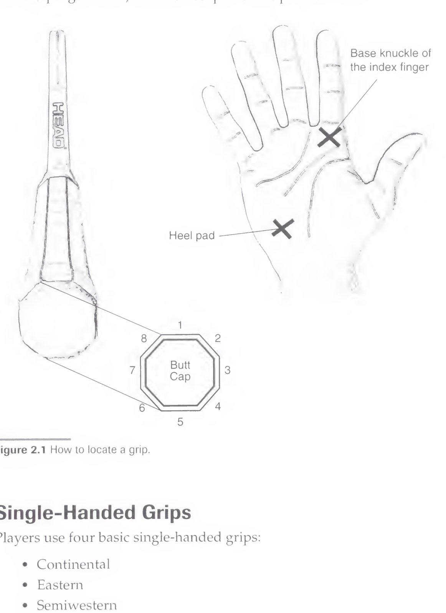
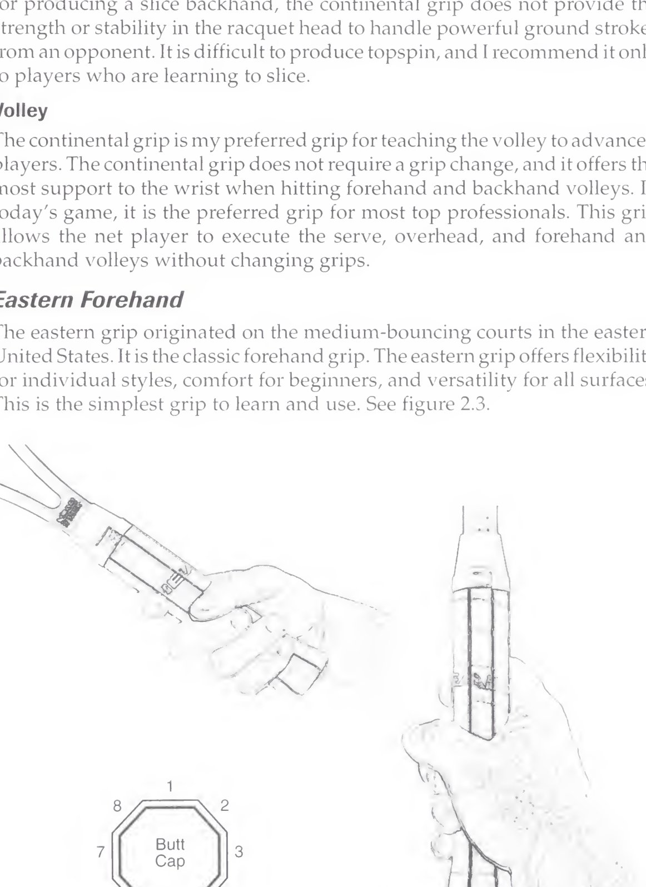
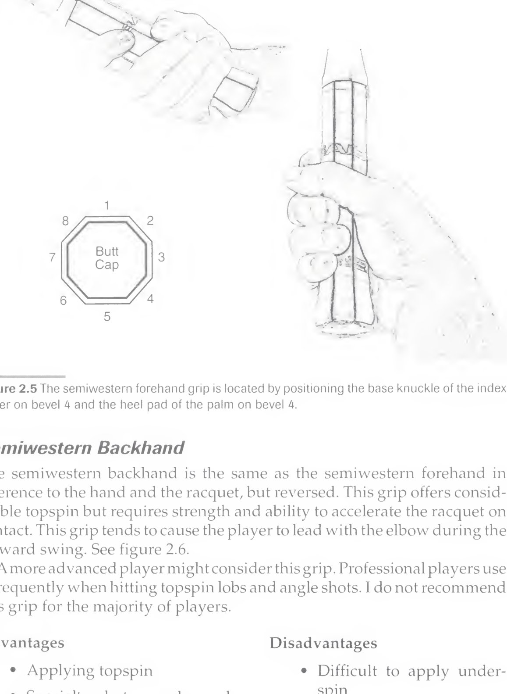
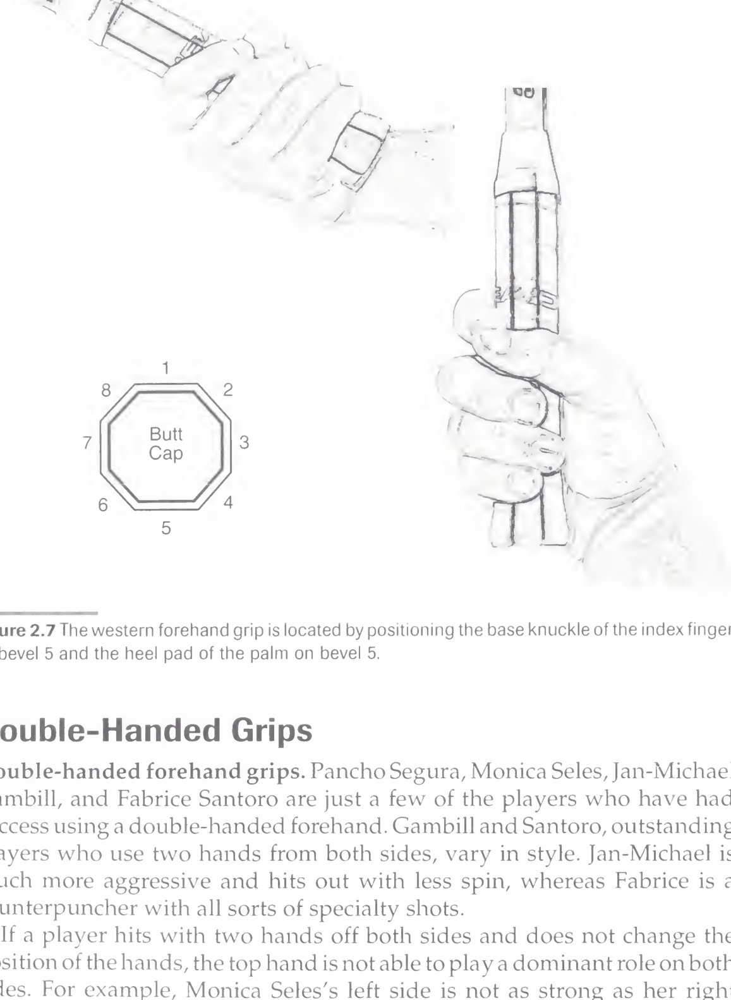
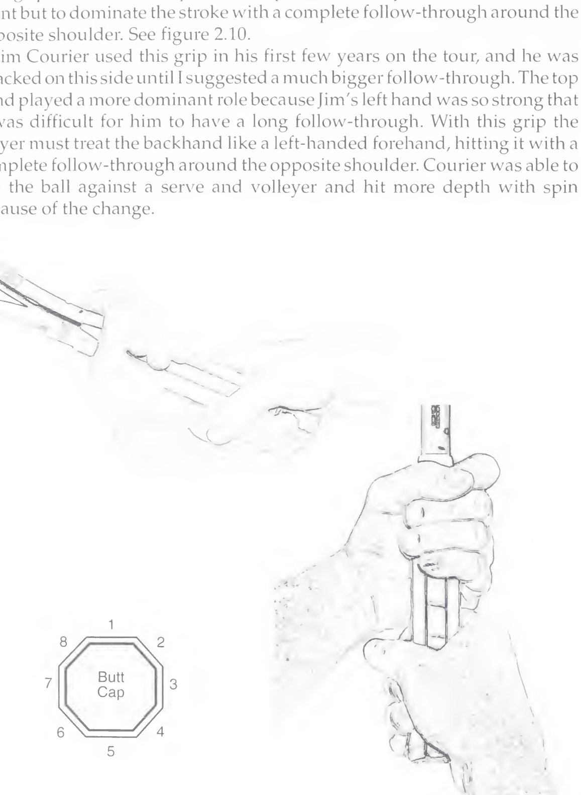
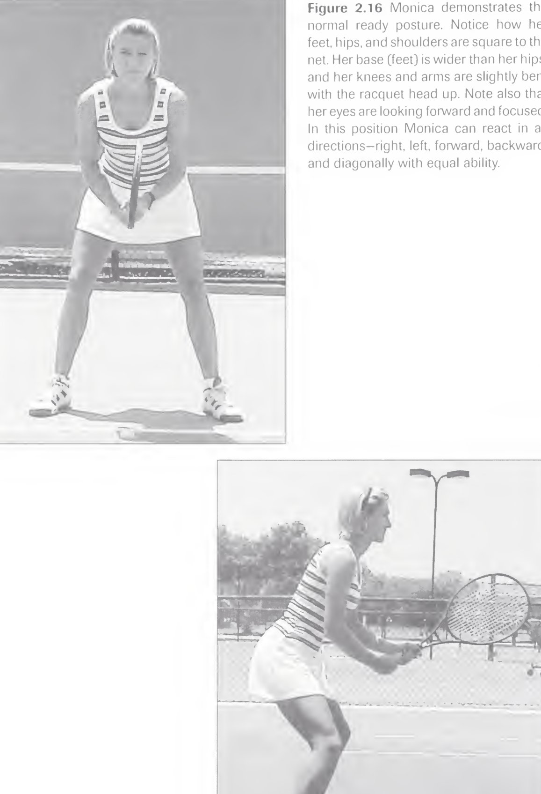
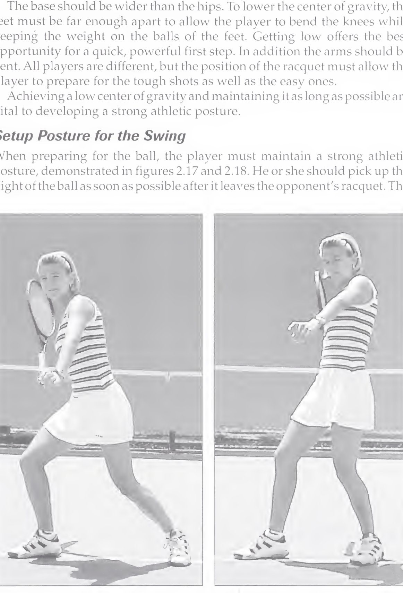
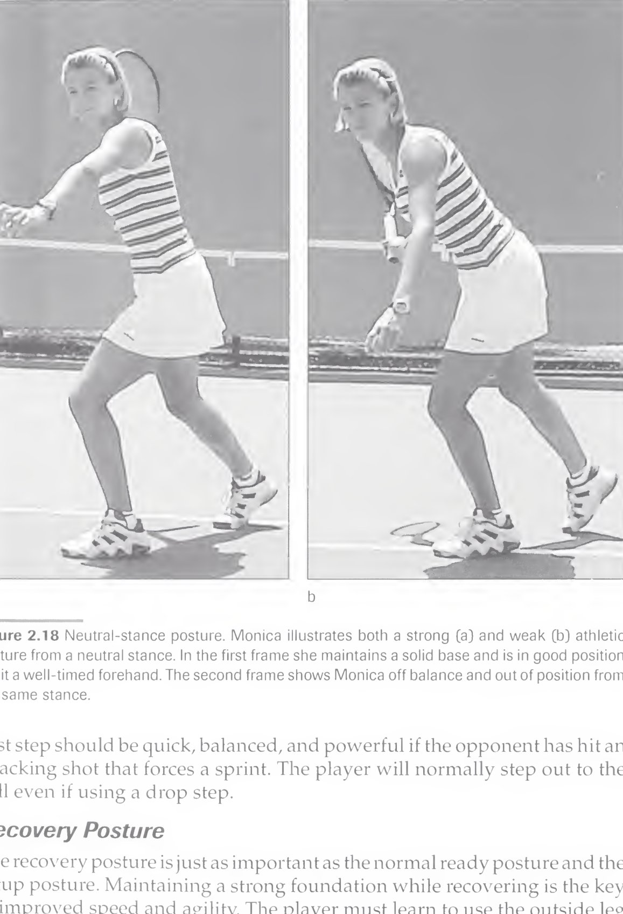
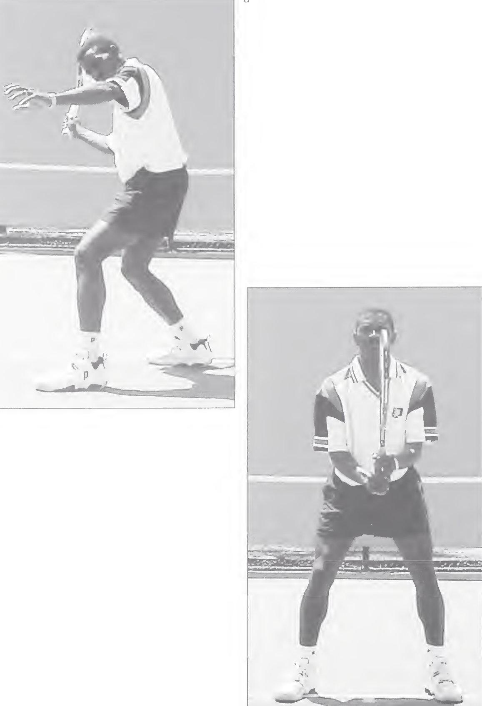
Chương 3: Cú thuận tay sát thủ (Killer Forehand)
1. Sự tiến hóa của cú thuận tay hiện đại: Vũ khí thống trị tối thượng
Cú thuận tay (forehand) là vũ khí ghi điểm chủ lực quan trọng nhất trong quần vợt đỉnh cao. Trong kỷ nguyên hiện đại, cú thuận tay không còn là một đường bóng đẩy thẳng tắp cẩn trọng; nó là một cú quất sấm sét kết hợp giữa tốc độ đầu vợt khủng khiếp và độ xoáy topspin cực nặng, cho phép người chơi tấn công từ mọi góc chết trên sân.
Sự khác biệt cốt lõi giữa cú thuận tay cổ điển và cú thuận tay sát thủ Bollettieri nằm ở ba yếu tố: Kiểu cầm vợt Semi-Western, thế đứng mở (Open Stance), và kỹ thuật kết thúc vợt quạt kính gạt nước (Windshield-Wiper Finish). Sự kết hợp này giải phóng toàn bộ tốc độ quay của thân người và tạo ra quỹ đạo bóng bay vừa cắm sâu, vừa bốc cao đầy hiểm hóc sau khi chạm đất.
2. Cơ học động lực: Vòng lặp mở đà và Hiện tượng 'Độ trễ đầu vợt' (Racquet Lag)
Giai đoạn mở vợt vòng lặp (Circular Loop): Khi bóng đối phương bay sang, tay vợt không kéo thẳng vợt ra sau một cách thụ động. Thay vào đó, cả thân người xoay mở theo một đường cong elip nhịp nhàng, nâng đầu vợt cao ngang đầu. Động tác mở vòng cung này tạo đà rơi tự nhiên cho đầu vợt nhờ trọng lực.
Độ trễ đầu vợt (Racquet Lag) — Bí mật của lực quất: Khi hông và vai bắt đầu xoay bứt tốc về phía trước để vào bóng, cánh tay và cổ tay được thả lỏng hoàn toàn. Do quán tính, đầu vợt sẽ 'bị tụt lại phía sau' (lag) với chuôi vợt dẫn đầu chỉ thẳng vào quả bóng. Khi thân người xoay đến điểm giới hạn, toàn bộ năng lượng tích tụ sẽ bung ra như một chiếc lò xo bị nén cực đại: đầu vợt bay vút qua quả bóng với vận tốc góc vượt trội.
Điểm tiếp xúc bóng lý tưởng luôn nằm ở phía trước hông trước khoảng 30 đến 45 centimet, đảm bảo cánh tay tạo thành một góc gấp khúc cơ học vững chắc (double-bend structure) hấp thụ toàn bộ xung lực.
3. Kết thúc vòng vung kiểu quạt kính gạt nước (Windshield-Wiper Finish)
Trong kỹ thuật truyền thống, người ta dạy học viên kết thúc vợt vắt cao qua vai trái. Tuy nhiên, để tạo topspin tối đa ở tốc độ bóng cao, các học trò của tôi như Andre Agassi và Jim Courier sử dụng kỹ thuật kết thúc quạt kính gạt nước.
Ngay sau khi tiếp xúc bóng, cẳng tay và cổ tay xoay lật cực nhanh theo trục ngang (pronation/internal rotation), quét mặt vợt qua mặt bóng tương tự như chiếc cần gạt nước trên kính chắn gió ô tô. Vợt kết thúc ở vị trí ngang ngực hoặc bên dưới vai trái. Kỹ thuật này giữ cho quả bóng bay là là mặt lưới nhưng cắm chúc xuống ngay trước vạch cuối sân đối phương với độ nảy bốc cao ngang vai.
4. Đòn đánh Inside-Out và Inside-In: Xé toang hàng phòng ngự
Cú đánh thuận tay né trái đánh thuận (Inside-Out Forehand) là phát minh chiến thuật định hình nên sự nghiệp lẫy lừng của Jim Courier. Thay vì đánh một cú trái tay phòng thủ đều đều từ góc trái sân, Courier chủ động lùi nhanh ra sau, mở rộng hai chân và tung cú thuận tay chéo sân cực nặng nhắm thẳng vào góc trái tay của đối phương.
Khi đối thủ bắt đầu có xu hướng di chuyển sớm sang bên trái để đón bắt cú Inside-Out, tay vợt sẽ bất ngờ thay đổi điểm tiếp xúc sớm hơn một phần mười giây để bắn quả bóng thẳng tắp dọc dây (Inside-In Forehand) vào góc sân trống hoác phía bên phải đối thủ. Sự kết hợp giữa Inside-Out và Inside-In biến góc trái sân của bạn thành một pháo đài tấn công không thể ngăn cản.
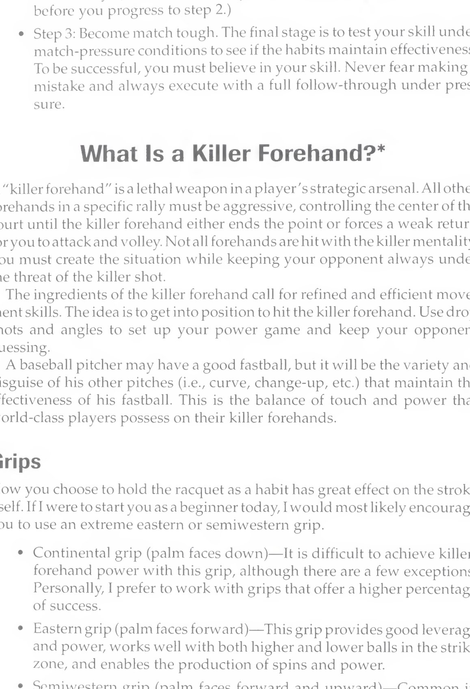
Chương 4: Trái tay bộc phá (Boll-istic Backhand)
1. Cuộc đối đầu lịch sử: Trái tay một tay hay hai tay?
Tại Học viện Bollettieri, chúng tôi không áp đặt một khuôn mẫu duy nhất cho tất cả học viên. Quyết định chơi trái một tay hay hai tay phụ thuộc vào tố chất thể chất và cảm giác tự nhiên của từng người:
Cú trái tay hai tay (Two-Handed Backhand): Là sự lựa chọn của đa số các học viên hiện đại (Agassi, Seles, Rios, Sharapova, Williams). Ưu điểm vượt trội: Sự vững chắc tuyệt đối trước những cú giao bóng sấm sét và những đường bóng nảy cao ngang vai; khả năng ẩn giấu hướng đánh cho đến khoảnh khắc cuối cùng; và đặc biệt là sức mạnh bộc phá từ tay không thuận (tay trái đóng vai trò như một cú thuận tay uy lực).
Cú trái tay một tay (One-Handed Backhand): Được thể hiện mẫu mực qua Tommy Haas và Pete Sampras. Ưu điểm: Tầm bao quát sân rộng hơn ở những đường bóng kéo xa; sự chuyển đổi mượt mà sang cú cắt slice và bắt vô-lê trên lưới; cùng vẻ đẹp thẩm mỹ thanh thoát cổ điển. Tuy nhiên, nó đòi hỏi sức mạnh cơ bắp vai và cổ tay cực lớn để xử lý bóng cao.
2. Kỹ thuật trái hai tay đỉnh cao: Bắt bóng ngay khi nảy (Taking the ball on the rise)
Huyền thoại Andre Agassi đã nâng tầm cú trái tay hai tay thành một nghệ thuật hủy diệt nhờ kỹ thuật bắt bóng ngay khi nảy (on the rise). Trong khi các đối thủ khác lùi lại đợi bóng rơi xuống tầm thắt lưng mới đánh, Agassi đứng chôn chân ngay trên vạch cuối sân, mở vợt cực kỳ ngắn gọn và tung cú đánh khi bóng vừa nhú lên khỏi mặt đất 20 đến 30 centimet.
Bằng cách tước đoạt toàn bộ thời gian chuẩn bị của đối phương, quả bóng trả về sân đối diện với tốc độ khủng khiếp. Để thực hiện được điều này, bàn tay không thuận (tay trên) phải đóng vai trò động lực chính đẩy mặt vợt xuyên qua tâm bóng, trong khi tay thuận (tay dưới) giữ vai trò định hướng và ổn định góc tiếp xúc.
3. Cú cắt bóng trái tay (Backhand Slice): Vũ khí chiến thuật tinh quái
Một tay vợt có cú trái hai tay uy lực vẫn bắt buộc phải thành thạo cú cắt slice một tay. Cú slice không chỉ là chiếc phao cứu sinh khi bị kéo giãn người hết cỡ ngoài vạch biên, mà còn là đòn tiếp cận lên lưới (approach shot) chết chóc.
Mặt vợt mở nghiêng, chém lát mỏng từ trên cao xuống dưới quả bóng với sự chuyển trọng tâm dứt khoát qua chân trước. Quả bóng trượt chuội sát mặt sân buộc đối thủ phải cúi gập người nâng bóng lên, tạo cơ hội bằng vàng cho bạn ập vào vồ lưới dứt điểm.
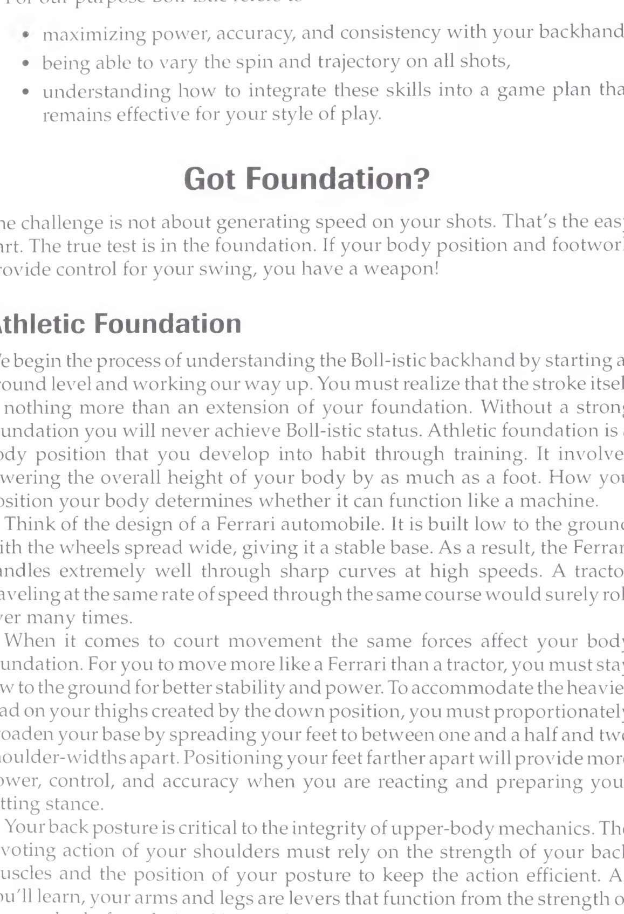
Chương 5: Giao bóng siêu thanh (Sonic Serves)
1. Giải phẫu cú giao bóng uy lực: Từ mặt đất tới điểm vươn cao nhất
Một cú giao bóng uy lực trên 200 km/h của Pete Sampras hay Boris Becker không sinh ra từ sức mạnh cơ bắp của cánh tay; nó là sự tổng hòa của một chuỗi động học chuẩn xác đến từng milimet:
Bước 1: Tư thế chuẩn bị và tung bóng nhịp nhàng — Bàn tay cầm bóng nâng lên như đặt một quả trứng lên kệ kính. Bóng được tung ổn định vào vị trí hướng 1 giờ bên trong sân.
Bước 2: Nạp năng lượng hình cánh cung (Trophy Pose) — Hai đầu gối khuỵu sâu nạp năng lượng đàn hồi, hông đẩy nhẹ về phía trước, vai xoay nghiêng tạo đường dốc đứng giữa vai trước và vai sau.
Bước 3: Bật nhảy và rơi vợt gãi lưng (Racquet Drop) — Chân đạp mạnh đẩy toàn thân bay vọt lên không trung, trong khi đầu vợt rơi tự do sâu xuống sau lưng dọc theo sống lưng.
Bước 4: Động tác phát lực Pronation bộc phá — Cánh tay vươn thẳng lên tiếp xúc bóng ở độ cao tối đa, cẳng tay xoay lật từ trong ra ngoài (pronation) đánh thẳng vào bóng như một cú đóng đinh sấm sét.
2. Ba loại quả giao bóng chiến lược trong kho vũ khí Bollettieri
Quả giao bóng phẳng (Flat Serve): Mặt vợt đi xuyên thẳng qua tâm bóng với tốc độ tối đa, bóng bay căng và cắm thẳng vào góc sân. Đây là quả giao bóng một để săn tìm điểm ace trực tiếp.
Quả giao bóng chém xoáy (Slice Serve): Vợt chém vào mặt ngoài bên phải quả bóng (vị trí 3 giờ). Bóng bay xoáy cong vòng cung xé toang góc sân bên phải (Deuce court) hoặc ép thẳng vào người đối thủ (body serve), lôi kéo họ ra khỏi sân đấu.
Quả giao bóng xoáy nảy cắm (Kick / Topspin Serve): Vợt quét từ vị trí 7 giờ lên 1 giờ qua lưng quả bóng. Khi chạm đất, quả bóng bốc cao ngang vai hoặc ngang đầu với độ xoáy cắn giật sang trái, cực kỳ lợi hại khi nhắm vào điểm yếu trái tay của đối thủ ở quả giao bóng hai.
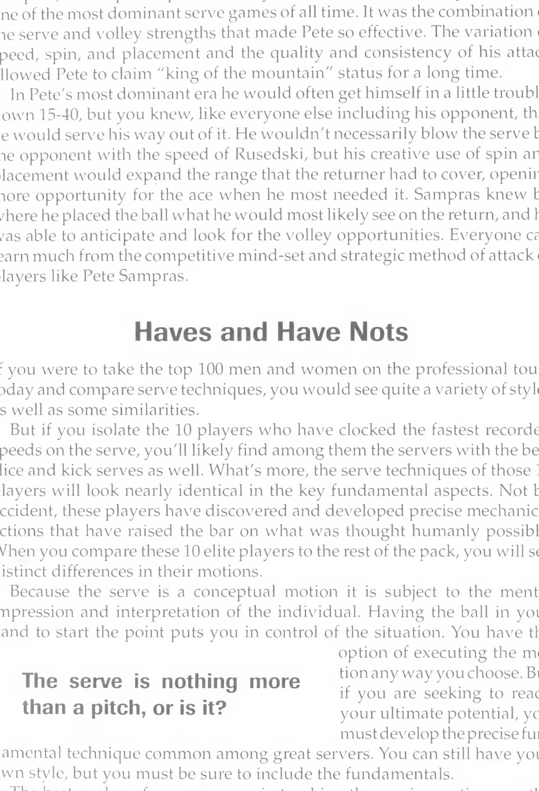
Chương 6: Trả giao bóng phản kích (Right-Back-Atcha Returns)
1. Triết lý trả giao bóng: Phát súng phản công ngay từ nhịp đầu
Cú trả giao bóng (Return of serve) là cú đánh quan trọng thứ hai trong quần vợt, chỉ sau chính cú giao bóng. Tại học viện của tôi, chúng tôi không dạy học viên trả bóng để 'chờ đối thủ đánh hỏng'. Chúng tôi dạy họ trả giao bóng với tâm thế của một kẻ đi săn: phản kích ngay lập tức (Right-Back-Atcha)!
Chìa khóa then chốt của cú trả giao bóng là động tác nhảy đệm nhịp nhàng (Split-Step). Thời điểm thực hiện split-step chuẩn xác là khi tay đối phương đạt điểm cao nhất chuẩn bị chạm bóng. Bước nhảy này giúp bạn nạp sẵn thế cân bằng đàn hồi để bứt tốc về mọi hướng ngay khi mắt đọc được hướng bóng.
2. Đối phó với Quả Giao Bóng Một và Tấn công Quả Giao Bóng Hai
Đối phó với quả giao bóng một sấm sét: Đừng cố vung đà rộng! Thời gian phản xạ không cho phép bạn mở vợt lớn. Hãy sử dụng đà mở vợt cực ngắn (compact block), dùng chính lực của quả bóng đối phương và khóa cứng cổ tay để chuyển hướng đường bóng sâu vào góc sân an toàn.
Tấn công quả giao bóng hai: Đây là cơ hội vàng để trừng phạt đối thủ. Hãy chủ động bước chân vào trong sân từ 1 đến 2 bước, đón đầu điểm nảy của bóng và tung ra cú thuận tay hoặc trái tay tấn công cắm sâu vào điểm yếu của họ, đẩy đối thủ vào thế phòng ngự bị động ngay trong game cầm giao bóng của chính họ.
Chương 7: Lối chơi trên lưới ngoan cường (Tenacious Net Play)
1. Cuộc cách mạng Drive Volley: Sáng tạo thay đổi lịch sử của Nick Bollettieri
Trước khi Học viện Bollettieri xuất hiện, toàn bộ giới quần vợt truyền thống đều tuân thủ giáo điều: khi lên lưới, bắt buộc phải đấm vô-lê truyền thống (block/punch volley). Bất kỳ ai vung hết đà trên không đều bị coi là 'thiếu bài bản'.
Nhưng chúng tôi đã thách thức giáo điều đó bằng việc phát minh và hoàn thiện cú Vô-lê vung đà hết cỡ (The Drive Volley hay Swinging Volley). Khi đối phương lốp một quả bóng lơ lửng ở tầm ngang ngực hoặc ngang vai, thay vì tiến lại đấm nhẹ quả vô-lê cho đối thủ có thời gian phòng ngự, các học trò của tôi như Monica Seles, Andre Agassi, Maria Sharapova và Serena Williams sẽ vung toàn bộ vòng vợt thuận tay hoặc trái tay bộc phá topspin ngay trên không!
Quả bóng lao đi như một viên đạn đại bác với vận tốc cực lớn và độ xoáy cuộn cắm sân, kết liễu điểm số ngay tức khắc trước khi bóng kịp chạm đất. Cú Drive Volley đã trở thành chuẩn mực bắt buộc trong quần vợt nhà nghề hiện đại ngày nay.
2. Kỹ thuật đấm vô-lê truyền thống: Ngắn gọn, Đầm chắc và Không vung đà
Bên cạnh cú Drive Volley sát thủ, một tay vợt toàn diện vẫn phải sở hữu cú đấm vô-lê truyền thống (Punch Volley) vững như bàn thạch để xử lý những đường passing shot bắn thẳng vào người hoặc dưới tầm lưới.
Ba nguyên tắc vàng của cú đấm vô-lê: Thứ nhất, mở vợt bằng cách xoay vai chứ không kéo tay ra sau vai; thứ hai, giữ đầu vợt luôn cao hơn cổ tay và mặt vợt nghiêng nhẹ đón bóng ở phía trước ngực; thứ ba, bước chân đối diện chéo tới phía trước để đè toàn bộ trọng lượng cơ thể vào cú chạm bóng.
Đối với những quả vô-lê thấp sát mép lưới: Tuyệt đối không được hạ đầu vợt chúc xuống bằng cổ tay. Hãy khuỵu sâu hai đầu gối, hạ thấp trọng tâm ngang tầm bóng và khéo léo dùng cảm giác ngón tay nâng nhẹ bóng qua lưới vào góc trống.
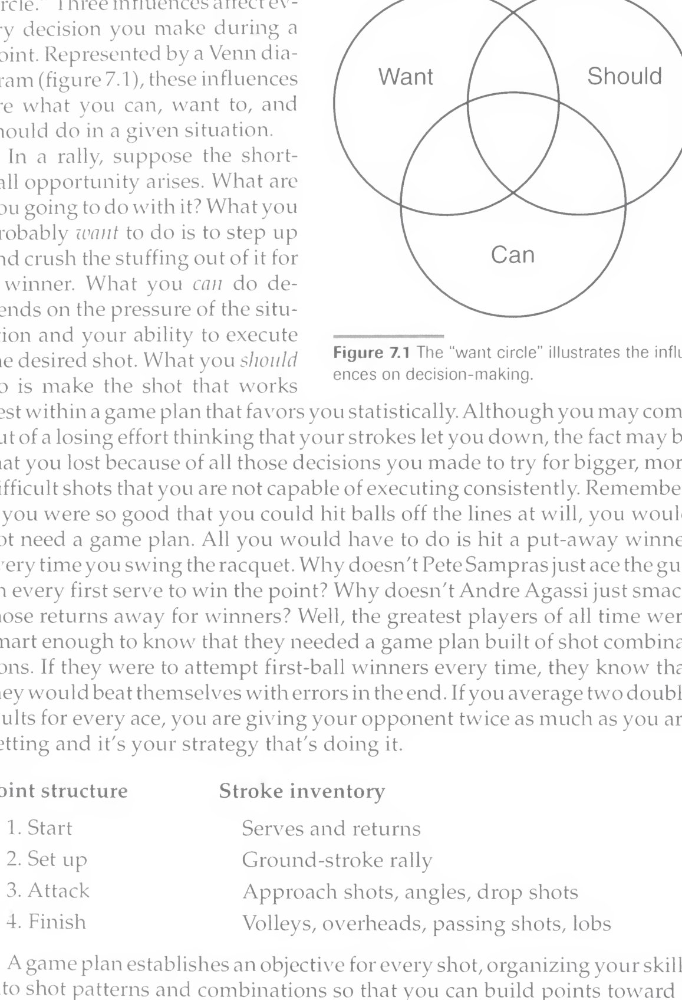
Chương 8: Những cú đánh đặc thù (Specialty Shots)
1. Cú bỏ nhỏ (Drop Shot): Vũ khí tra tấn thể lực và ý chí
Một cú bỏ nhỏ thành công là sự kết hợp hoàn hảo giữa nghệ thuật ngụy trang động tác và cảm giác chạm bóng tinh tế (touch). Đừng bao giờ lộ ý định bỏ nhỏ từ sớm bằng việc đứng khựng lại hay ngửa mặt vợt ra trước.
Hãy mở vợt với tư thế chuẩn bị đánh bạt mạnh mẽ như thường lệ. Đúng vào phần nghìn giây trước khi chạm bóng, bàn tay nới lỏng nhẹ độ siết trên cán vợt, hạ đầu vợt và vuốt nhẹ lát mỏng dưới đáy quả bóng để tạo xoáy lùi cực lớn (backspin). Quả bóng sẽ bay qua mép lưới rồi rơi lả tả sát mặt sân, lăn ngược trở lại khiến đối thủ bất lực.
2. Cú lốp bóng tấn công Topspin (Offensive Topspin Lob)
Khi đối thủ ập sát lưới áp đảo, cú lốp bóng tấn công topspin là đòn trừng phạt ngoạn mục nhất. Thay vì hất bóng bổng lên trời như cú lốp phòng thủ, bạn vuốt vợt cực nhanh từ dưới lên trên qua đầu đối phương.
Độ cao của bóng chỉ vừa đủ vượt khỏi tầm với tối đa của vợt đối thủ, sau đó lực xoáy topspin cực nặng sẽ kéo quả bóng cắm chúi xuống góc cuối sân đối diện và nảy tít ra xa ngoài tầm với.
Chương 9: Chiến thuật đánh đôi hiện đại (Doubles Techniques)
1. Thống trị lưới: Quy luật sinh tử trong đánh đôi đỉnh cao
Trong đánh đôi, đội nào làm chủ được khu vực 3 mét trước lưới là đội nắm chắc quyền kiểm soát trận đấu. Hai tay vợt phải thi đấu như một khối thống nhất, di chuyển đồng điệu theo quả bóng như thể được kết nối bởi một thanh thép vô hình.
Khoảng trống chết người trong đánh đôi luôn nằm ở trung lộ giữa hai người. Hãy ưu tiên khép chặt trung lộ và ép đối phương phải đánh những đường passing shot góc hẹp đầy rủi ro qua mép biên.
2. Đội hình biến ảo: Đội hình Úc (Australian) và Đội hình chữ I (I-Formation)
Để vô hiệu hóa những tay vợt có cú trả giao bóng chéo sân quá xuất sắc, chúng tôi triển khai Đội hình chữ I (I-Formation): Người đứng lưới ngồi thụp xuống ngay giữa vạch phát bóng trung lộ (chữ T), trong khi người giao bóng đứng gần điểm giữa vạch cuối sân.
Trước khi giao bóng, người đứng lưới sẽ ra tín hiệu tay sau lưng cho biết mình sẽ nhảy sang bên trái hay bên phải để bắt lưới sau khi bóng được phát đi. Sự bất ngờ và áp lực thị giác này khiến người trả giao bóng hoàn toàn bị rối loạn và phạm lỗi tự đánh hỏng.
Chương 10: Luyện tập có chủ đích (Practice With Purpose)
1. Triết lý tập luyện: 'Practice as you play, play as you practice'
Đánh bóng qua lại hàng giờ một cách lười biếng, không có mục tiêu rõ ràng là cách nhanh nhất để tạo ra những thói quen xấu. Tại Học viện Bollettieri, không có một giây phút nào trên sân tập bị lãng phí.
Mỗi bài tập đều phải mô phỏng áp lực thực chiến 100%: có mục tiêu điểm rơi cụ thể trên sân, có tính điểm thưởng phạt, và đòi hỏi sự tập trung cao độ tối đa. Sự tự tin tuyệt đối của một nhà vô địch trong loạt tiebreak nghẹt thở sinh ra từ việc họ đã thực hiện cú đánh đó hàng chục ngàn lần dưới áp lực khắt khe trên sân tập.
2. Các bài tập đối kháng kinh điển tại Học viện Bollettieri
Bài tập 'Hai Đấu Một' (2-on-1 Grinder): Một tay vợt đứng một mình ở một bên sân phải đối đầu với hai đối thủ ở bên kia lưới liên tục bắn phá bóng vào hai góc xa. Bài tập này tôi luyện thể lực siêu phàm, khả năng bứt tốc phục hồi và ý chí không bao giờ đầu hàng.
Bài tập 'Kiểm soát độ sâu 5 điểm': Người chơi chỉ được tính điểm nếu quả bóng đánh rơi sâu vào dải đất 1,5 mét trước vạch cuối sân. Bài tập này hình thành bản xạ tự nhiên về độ dài cú đánh, ngăn chặn thói quen đánh bóng ngắn chết người.
Chương 11: Thể lực và vận động đỉnh cao (Physical Conditioning)
1. Thể lực hiện đại: Nền tảng sống còn của một chiến binh quần vợt
Trong kỷ nguyên quần vợt đương đại, bạn không thể trở thành nhà vô địch nếu chỉ có kỹ thuật khéo léo mà thể lực yếu ớt. Quần vợt đỉnh cao là cuộc marathon bao gồm hàng trăm pha chạy nước rút cự ly ngắn ở cường độ bộc phát cao nhất.
Tại Học viện Bollettieri, chúng tôi thiết kế hệ thống rèn luyện SAQ (Speed - Agility - Quickness): Tốc độ bứt tốc, Độ nhanh nhẹn đổi hướng, và Phản xạ kích hoạt bước đầu tiên. Một phần mười giây nhanh hơn trong bước di chuyển đầu tiên chính là sự khác biệt giữa một cú dứt điểm uy lực và một pha cứu bóng chới với trong tuyệt vọng.
2. Sức mạnh vùng lõi (Core Strength) và Độ dẻo dai linh hoạt
Sức mạnh bộc phát của mọi cú đánh — từ quả giao bóng siêu thanh đến cú thuận tay sát thủ — đều bắt nguồn từ vùng cơ lõi (cơ bụng, cơ lưng dưới và cơ liên sườn). Một vùng lõi thép cho phép tay vợt xoay vặn thân người ở tốc độ cực đại mà không bị mất thăng bằng hay chấn thương cột sống.
Bên cạnh sức mạnh, sự dẻo dai linh hoạt (flexibility) thông qua các bài tập giãn cơ động (dynamic stretching) trước trận và giãn cơ tĩnh (static stretching) sau trận là chìa khóa để kéo dài tuổi thọ thi đấu đỉnh cao và ngăn ngừa hoàn toàn các chấn thương khớp gối, vai và khuỷu tay.
Chương 12: Huấn luyện tinh thần thép (Mental Training)
1. Bản chất của tinh thần thép: Sự kiên cường trước nghịch cảnh
Bản lĩnh thi đấu thép không phải là không bao giờ cảm thấy sợ hãi; bản lĩnh là khả năng hành động dũng cảm và quyết đoán ngay giữa tâm bão của nỗi sợ hãi. Mọi đấu thủ vĩ đại đều trải qua cảm giác tim đập thình thịch và áp lực nghẹt thở vào thời khắc quyết định.
Người chiến thắng khác biệt ở chỗ họ đón nhận áp lực đó như một đặc ân (Pressure is a privilege). Họ tập trung toàn bộ tâm trí vào quy trình thực hiện từng cú đánh ở thời điểm hiện tại thay vì để tâm trí trôi dạt vào những viễn cảnh thắng thua trong tương lai.
2. Hóa giải hiện tượng 'Cóng tay' (Choking) và Ngôn ngữ cơ thể
Hiện tượng 'cóng tay' (choking) xảy ra khi nỗi sợ hãi thất bại làm co thắt các nhóm cơ bắp, khiến tay vợt rụt tay lại và đánh bóng ngập ngừng. Để hóa giải hiện tượng này, hãy áp dụng quy trình 4 bước của Bollettieri: Hít thở sâu bằng cơ hoành, thả lỏng các ngón tay trên cán vợt, bước đi với tư thế hiên ngang ngẩng cao đầu, và cam kết vung vợt với tốc độ tối đa không do dự.
Ngôn ngữ cơ thể (Body Language) của bạn truyền tải thông điệp mạnh mẽ sang phía bên kia lưới. Tuyệt đối không bao giờ cúi gục đầu, buông thõng hai vai hay đập vợt cáu kỉnh. Hãy luôn duy trì ánh mắt kiên định, ngực ưỡn cao và bước chân vững chãi như một đấu sĩ La Mã. Sự tự tin toát ra từ bạn sẽ khiến đối thủ phải run sợ.
Chương 13: Kế hoạch trận đấu và chiến lược tác chiến (Game Plans and Match Strategy)
1. Nguyên tắc vàng: 'Chơi bằng điểm mạnh của mình, tấn công vào điểm yếu của đối thủ'
Một kế hoạch thi đấu xuất sắc (Game Plan) luôn bắt đầu từ việc thấu hiểu tường tận bản thân: Vũ khí sát thủ nhất của bạn là gì? Cú giao bóng, cú thuận tay hay quả vô-lê? Hãy xây dựng toàn bộ chiến thuật để ép đối phương phải đánh bóng vào vùng sở trường đó của bạn.
Đồng thời, hãy trinh sát và tìm ra tử huyệt của đối thủ: Cú trái tay của họ có xử lý được bóng nảy cao không? Quả giao bóng hai của họ có nông không? Họ có sợ bị kéo lên lưới không? Khi đã xác định được điểm yếu chí mạng của đối phương, hãy kiên định khoét sâu vào đó không ngừng nghỉ cho đến khi hàng phòng ngự của họ hoàn toàn sụp đổ.
2. Luôn chuẩn bị sẵn sàng Kế hoạch B (Plan B)
Sẽ có những ngày thi đấu mà cú đánh sở trường của bạn không hoạt động như ý muốn, hoặc đối thủ thi đấu thăng hoa và vô hiệu hóa hoàn toàn Kế hoạch A của bạn. Một tay vợt tầm thường sẽ hoảng loạn và sụp đổ; một nhà vô địch sẽ lập tức kích hoạt Kế hoạch B.
Kế hoạch B có thể là thay đổi nhịp độ: từ bỏ lối đánh nhanh để chuyển sang những đường bóng xoáy cao sâu an toàn; hoặc ngược lại, bất ngờ tràn lưới liên tục để làm xáo trộn cảm giác bóng của đối thủ. Sự linh hoạt trong tư duy chiến thuật chính là chìa khóa lật ngược thế cờ.
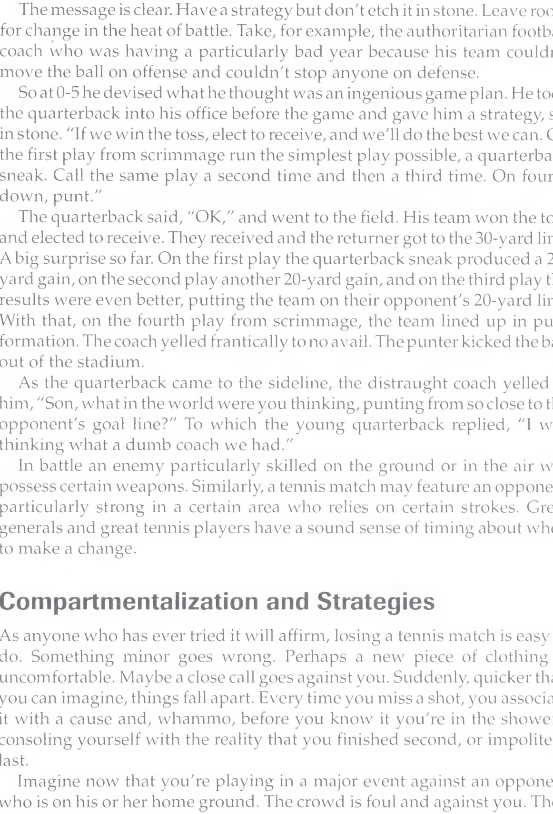
Chương 14: Trang thiết bị, dây và cán vợt (Racquets, Strings, and Grips)
1. Cây vợt: Phần mở rộng cơ thể của vận động viên
Cây vợt tennis không đơn thuần là một dụng cụ thể thao; nó là một cỗ máy cơ học chính xác và là phần mở rộng tự nhiên của cánh tay bạn. Việc lựa chọn cây vợt có trọng lượng, điểm cân bằng và độ cứng khung (stiffness) phù hợp với phong cách thi đấu là yếu tố quyết định hiệu suất trên sân.
Tay vợt tấn công cuối sân cần khung vợt có độ linh hoạt vừa phải để tạo topspin tối đa, trong khi tay vợt giao bóng lên lưới cần khung vợt đầm chắc và mặt vợt kiểm soát để hấp thụ xung lực tại lưới.
2. Bí mật của mặt dây và độ căng (Tension)
Mặt dây vợt là bộ phận duy nhất tiếp xúc trực tiếp với quả bóng. Quy tắc vật lý cơ bản: Căng dây mềm hơn (low tension) mang lại nhiều lực đẩy (power) và độ êm ái hơn; căng dây chặt hơn (high tension) mang lại khả năng kiểm soát bóng (control) và độ chính xác tối ưu.
Sự xuất hiện của các loại dây Polyester (như Luxilon) đã tạo nên cuộc cách mạng về độ xoáy trong quần vợt thế giới, cho phép các tay vợt vung vợt hết tốc lực mà bóng vẫn cắm sầm vào sân.
Chương 15 & Lời bạt: Tương lai của quần vợt trong thế kỷ 21 (The Future of Tennis)
1. Tương lai của môn thể thao quý tộc
Quần vợt trong tương lai sẽ tiếp tục chứng kiến sự gia tăng khủng khiếp về tốc độ bóng, đòi hỏi các đấu thủ phải sở hữu thể hình vượt trội, phản xạ siêu phàm và sự hỗ trợ toàn diện của khoa học thể thao (dinh dưỡng, phân tích dữ liệu video, cơ sinh học vi tính).
Tuy nhiên, dù công nghệ có phát triển đến đâu, những phẩm chất cốt lõi làm nên một nhà vô địch vĩ đại vẫn sẽ không bao giờ thay đổi: Trái tim dũng cảm, tinh thần kỷ luật tự giác, lòng trung thực và niềm say mê thuần khiết dành cho từng đường bay của quả bóng nỉ vàng.
2. Lời nhắn nhủ tâm huyết cuối cùng từ Nick Bollettieri
Hãy luôn nhớ rằng: Quần vợt là một trò chơi tuyệt diệu để bạn khám phá và vượt qua những giới hạn cao nhất của chính mình. Đừng sợ hãi thất bại; hãy coi mỗi thử thách trên sân là cơ hội để tôi luyện nhân cách và bản lĩnh sống.
Hãy bước ra sân với nụ cười trên môi, thi đấu với 100% trái tim và ngọn lửa đam mê cháy bỏng. Đó là cách bạn trở thành một nhà vô địch thực sự — nhà vô địch trong thể thao và nhà vô địch của cuộc đời!